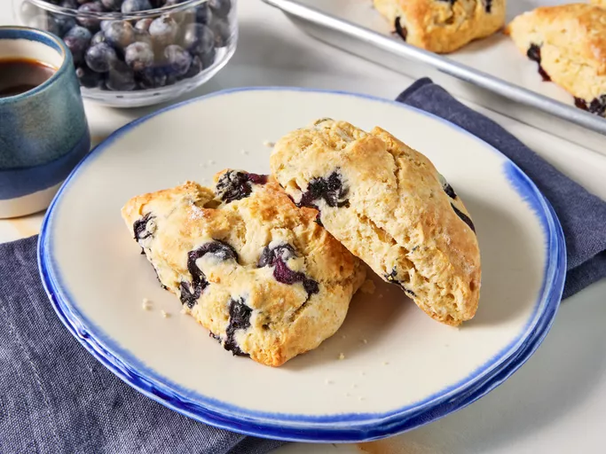

Scones

What are Scones ?
A scone is a traditional British baked good, popular in the United Kingdom and Ireland.
It is usually made of either wheat flour or oatmeal.
Scones are traditionally Irish, Scottish, and English foods. However, nobody knows which of these countries invented the baked food.
As far as history can trace back, Scones probably originate from Scotland.
Yes, the first print reference dates back to 1513 and is from a Scottish poet.
Ingredients :
- 500 gr of white flour
- 50 gr of unsalted butter
- 80 gr of caster sugar
- 5 tsp of baking powder
- 3 eggs
- 250 ml of milk
Steps :
- Preheat the oven to 200°C fan or 220°C
- Put flour in a bowl and add butter. Mix butter with flour making
sure to eliminate lumps by rubbing it through your fingers (infuse the butter in the flour)
- Add the sugar and the baking powder and give a mix
- Add two eggs and gently mix in
- Add milk and mix. The mixture musn't be to dry or to wet,
must be a paste (add milk depending on the mixture)
- Scatter flour on your workbench and fold the mixture
- Flatten the mixture down and roll it down, creating a circle to a depth
of about 2.5cm
- Get your scone cutter, add a bit of flour to help release the mix
- Every time you cut the dough relax it back so all the scones stay the same size
- Crack the last egg in a bowl and whisk. Then add with a brush the egg to the top of the scone
- Put the scones in the oven for 15 minutes
- After 15 minutes take out and dish with a side of strawberry jam and clotted cream
If completely lost ...
Scones recipe !